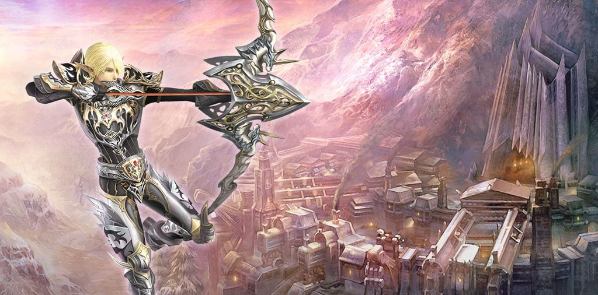
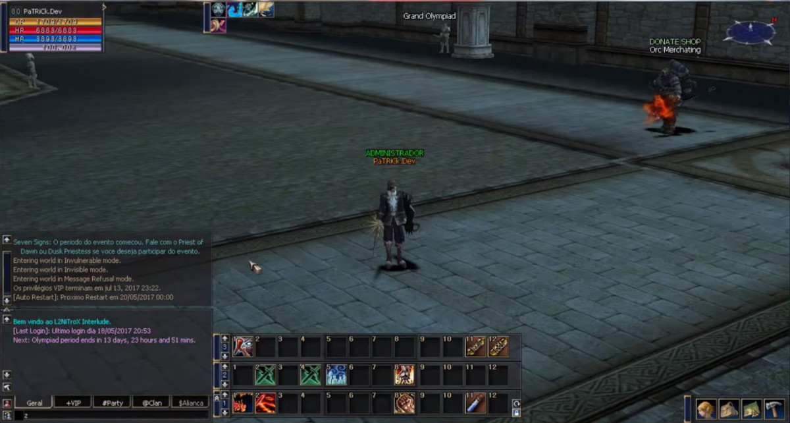

Olá, pessoal! Meu nome é Patrick e tenho 29 anos. Nesta timeline, vou
contar um pouco da minha história na programação. 😊
Ano 2007
Meu primeiro jogo de PC

Em 2007, conheci o Lineage 2, um jogo MMORPG incrível. Foi o meu
primeiro jogo online de PC, e eu simplesmente ficava viciado nele!
Chegava da escola e ia direto para a lan house que ficava na rua da
minha casa. Passava o dia inteiro lá, vivendo grandes aventuras
virtuais. Mas, depois de um tempo, só jogar já não era o suficiente.
Comecei a pesquisar sobre como o jogo funcionava, mesmo sem ter a
menor noção de programação na época. Pedi ajuda aos conhecidos que já
tinham colocado um servidor online e descobri que era feito em Java.
Daí em diante, comecei a estudar essa linguagem.
Ano 2012
Servidor Online, Mas Não Deu Certo 😞
Em 2012, coloquei esse servidor online para o mundo todo. Consegui ter
cerca de 70 jogadores online em um jogo hospedado no meu próprio PC.
Foi incrível! Claro que tive alguns problemas com hackers e bugs, o
que fez com que o servidor ficasse online por apenas uma semana. Mas
isso não me desanimou! Decidi contratar um data center do provedor de
internet que eu usava, mas, infelizmente, a experiência não foi tão
boa. O servidor caía constantemente, e tudo aquilo se tornou
frustrante.
Ano 2014 à 2017
Eu Não Desisti 🚀

Entre 2014 e 2017, decidi me desafiar ainda mais e reformulei
completamente o servidor. Corrigi eventos, criei NPCs do zero,
personalizei locais de evolução, itens, armaduras, armas, joias,
equilibrei todas as classes e itens, entre outras coisas. Fiz até
correções em vários eventos já existentes no jogo. Poderia falar muito
mais sobre isso! Embora não tenha mais o servidor, guardo um vídeo de
um tour que fiz para relembrar esses momentos. Clique para assistir o
video.
Ano 2011 e 2021
Momentos Especiais 🥰
Nessa trajetória, muitas coisas incríveis aconteceram além da
programação! 😊 Aos 17 anos, decidi abrir mão dos estudos para me
tornar independente e ingressar no mercado de trabalho. Mas os momentos
mais importantes da minha vida ocorreram em 2011, quando conheci minha
amada esposa, e em 2020, quando nasceu meu filho Benjamin. 💕 Esses
dois eventos transformadores fizeram com que eu voltasse aos caminhos
de Jesus, dos quais eu nunca deveria ter me desviado. 🙏
Apesar de ter deixado de lado meus estudos durante esse período, não
me arrependo de nenhuma escolha que fiz, pois amadureci como homem,
assumindo responsabilidades e fazendo planos para o futuro. Agora,
tenho uma experiência maravilhosa ao ser pai de um menino incrível! 👨👦
Hoje, eu tenho tudo o que sonhei e pedi a Deus, e sou imensamente
grato por todas as bênçãos que Ele tem me proporcionado. 🙌✨
Ano 2023
Foco na Meta 🎯📚
Mas, a partir de 2023, estou decidido a me dedicar incessantemente à
programação. Concluí meu ensino médio com o ENCCEJA (fiz a prova em
2022) e atualmente estou cursando Análise e Desenvolvimento de
Sistemas, migrando para a Programação Web. Este projeto que estou
desenvolvendo agora, usando HTML, CSS e JavaScript, é o meu segundo do
ano. Estou determinado a seguir em frente até conquistar meu primeiro
emprego na área.
Obrigado!
Se você chegou até aqui, saiba que fico muito feliz em compartilhar um
pouco da minha história com você. Se você está pensando em se tornar
um(a) programador(a), não pense demais, mergulhe de cabeça na lógica e
não desista até resolver o seu primeiro problema usando uma linguagem
programação. Normalmente, é nesse momento que acontece uma "virada de
chave", e você vai perceber claramente se gosta ou odeia. 😁
Espero que tenham gostado do meu resumo da trajetória na programação!
Sintam-se à vontade para fazer perguntas ou compartilhar suas próprias
histórias também. Vamos seguir em frente juntos nessa jornada
empolgante! 🚀✨